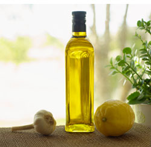

Step 5: While that bakes, wash and dry the salad leaves, and make a simple dressing by squeezing the juice of half a lemon into a jam jar. Top with twice as much extra virgin olive oil, and add a good pinch of salt and pepper. Put the lid on and give it a good shake, then put it to one side.
